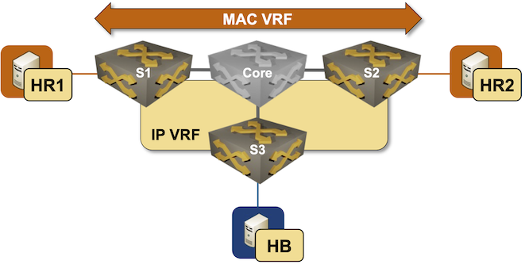

Intra-Subnet Routing with ARP Routes
In the previous EVPN lab exercises, you explored various mechanisms EVPN provides to implement layer-2 forwarding with MAC VRFs and layer-3 forwarding with IP VRFs. Now, imagine you want to implement a stretched VLAN (MAC VRF) and want it to be reachable from other subnets in the same IP VRF:

There’s a tiny problem in your design: S3 does not participate in the red MAC-VRF and thus has no idea where HR1 and HR2 are. The only information it has about the red subnet is the type-5 EVPN route advertised by S1 and S2, which gives it a 50% chance of sending traffic to the wrong switch1.
Some EVPN implementations include a mechanism that solves the suboptimal ingress routing to stretched VLAN problem. They can turn IPv4 ARP or IPv6 Neighbor Discovery (ND) information into host routes (/32 IPv4 or /128 IPv6 prefixes) and advertise them as type-5 EVPN routes, providing the remote switches with an optimal per-host path to the egress switch. That’s what you’ll practice in this lab exercise.
Expert
This lab is more challenging than most EVPN lab exercises. Good luck and Godspeed!
Device Requirements
You can use any device supported by the netlab OSPF, BGP, VRF, and VLAN configuration modules. netlab will also try to configure VXLAN, EVPN, MAC-VRF for the red VLAN, and IP-VRF for the tenant VRF.
Start the Lab
Assuming you already set up your lab infrastructure:
- Change directory to
evpn/9-arp-routes - Execute netlab up
- Log into lab devices with netlab connect and verify that they are properly configured.
- If netlab configured VXLAN and EVPN on your devices, ping HR2 from HR1 to verify everything works as expected.
Existing Device Configuration
- S1 and S2 are preconfigured with red VLAN using VLAN tag 100 and VXLAN VNI 10100.
- The red VLAN is in tenant VRF as is the S3-HB link
- IPv4 addresses are configured on all links and VLANs (details).
- The edge switches run OSPF in area 0 with the Core switch (details).
- The edge switches have a full mesh of IBGP sessions between their loopback interfaces (details). These sessions are configured to exchange IPv4 and EVPN prefixes.
- A MAC-VRF is configured for the red VLAN using import- and export route target
65000:100 - An IP-VRF with transit VNI 7000 is configured for the tenant VRF using import- and export route target
65000:1
Warning
Your lab won’t have the EVPN address family on IBGP sessions, VXLAN configuration, MAC-VRF, or IP-VRF configuration if netlab can’t configure them on your device. In that case, use the procedure you’ve mastered in the Build an EVPN-based MAC-VRF instance lab exercise to configure the EVPN address family and MAC-VRF, and the configuration steps from the VPN IP Routing in EVPN Fabrics lab exercise to configure the IP-VRF.
Establishing the Baseline
Explore the EVPN BGP table and the VRF routing table on S3. The EVPN BGP table should contain two type-5 routes for the IP prefix 172.16.0.0/24, and the VRF routing table should contain one or two next hops for that prefix, depending on whether your device does load balancing for IBGP destinations.
EVPN BGP table on S3 running Arista EOS
s3#show bgp evpn
BGP routing table information for VRF default
Router identifier 10.0.0.3, local AS number 65000
Route status codes: * - valid, > - active, S - Stale, E - ECMP head, e - ECMP
c - Contributing to ECMP, % - Pending best path selection
Origin codes: i - IGP, e - EGP, ? - incomplete
AS Path Attributes: Or-ID - Originator ID, C-LST - Cluster List, LL Nexthop - Link Local Nexthop
Network Next Hop Metric LocPref Weight Path
* > RD: 10.0.0.1:100 imet 10.0.0.1
10.0.0.1 - 100 0 i
* > RD: 10.0.0.2:100 imet 10.0.0.2
10.0.0.2 - 100 0 i
* > RD: 65000:1 ip-prefix 172.16.0.0/24
10.0.0.1 - 100 0 i
* RD: 65000:1 ip-prefix 172.16.0.0/24
10.0.0.2 - 100 0 i
* > RD: 65000:1 ip-prefix 172.16.1.0/24
- - - 0 i
VRF routing table on S3 running Arista EOS
s3#show ip route vrf tenant | begin Gateway
Gateway of last resort is not set
B I 172.16.0.0/24 [200/0]
via VTEP 10.0.0.2 VNI 7000 router-mac 00:1c:73:4f:bb:50 local-interface Vxlan1
C 172.16.1.0/24
directly connected, Ethernet2
Not surprisingly, the traceroute from HB to HR1 and HR2 often takes a suboptimal path.
traceroute from HB to HR1 and HR2 goes through S1 (S3 is running Arista cEOS release 4.35.2F)
$ netlab connect hb
Connecting to container clab-arproutes-hb, starting bash
hb:/# traceroute hr1
traceroute to hr1 (172.16.0.5), 30 hops max, 46 byte packets
1 Ethernet2.tenant.s3 (172.16.1.3) 0.003 ms 0.003 ms 0.004 ms
2 Vlan100.tenant.s1 (172.16.0.1) 3.546 ms 0.928 ms 0.818 ms
3 hr1 (172.16.0.5) 2.489 ms 1.257 ms 0.748 ms
hb:/# traceroute hr2
traceroute to hr2 (172.16.0.6), 30 hops max, 46 byte packets
1 Ethernet2.tenant.s3 (172.16.1.3) 0.003 ms 0.002 ms 0.001 ms
2 Vlan100.tenant.s1 (172.16.0.1) 1.391 ms 0.759 ms 0.724 ms
3 hr2 (172.16.0.6) 6.598 ms 1.989 ms 2.037 ms
Tip
- S3 has two equal-cost EVPN paths to the Red VLAN. Depending on the device defaults, it may use one or both. The exact path may also depend on the load-balancing algorithm S3 uses.
- On Arista EOS, you can configure BGP maximum-paths on S3 to obtain two equal-cost paths to the red subnet. That will not make the design any less wrong; it will just be wrong in a different, less deterministic2 way.
Generating EVPN Host Routes from ARP Information
Generating EVPN host routes from ARP information is usually a three-step process:
- Configure S1 and S2 to listen to bridged ARP/ND requests. Without this configuration, you’ll get host routes only when hosts attached to S1 or S2 send an ARP request for the switch’s IP address. You mastered this step in the Proxy ARP in EVPN MAC-VRF Instances lab exercise.
- Configure S1 and S2 to generate host routes from their ARP/ND information. Arista EOS expects you to configure ip attached-host route export on layer-3 interfaces3.
- Redistribute ARP/ND-derived host routes (attached-host routes in EOS lingo) into the VRF BGP table. The existing IP-VRF configuration should ensure they’re advertised as type-5 EVPN routes to other PE devices.
Verification
- Ping HB from HR1 and HR2 to ensure S1 and S2 receive their ARP requests. You can use the netlab exec command to execute both pings with a single command:
$ netlab exec hr* ping -c1 hb
Connecting to container clab-arproutes-hr1, executing ping -c1 hb
PING hb (172.16.1.7): 56 data bytes
64 bytes from 172.16.1.7: seq=0 ttl=62 time=1.640 ms
--- hb ping statistics ---
1 packets transmitted, 1 packets received, 0% packet loss
round-trip min/avg/max = 1.640/1.640/1.640 ms
Connecting to container clab-arproutes-hr2, executing ping -c1 hb
PING hb (172.16.1.7): 56 data bytes
64 bytes from 172.16.1.7: seq=0 ttl=62 time=2.409 ms
--- hb ping statistics ---
1 packets transmitted, 1 packets received, 0% packet loss
round-trip min/avg/max = 2.409/2.409/2.409 ms
- Inspect the EVPN BGP table on S3. It should contain /32 type-5 EVPN routes for HR1 and HR2:
Type-5 EVPN routes on S3 running Arista EOS
s3#show bgp evpn route-type ip-prefix
BGP routing table information for VRF default
Router identifier 10.0.0.3, local AS number 65000
Route status codes: * - valid, > - active, S - Stale, E - ECMP head, e - ECMP
c - Contributing to ECMP, % - Pending best path selection
Origin codes: i - IGP, e - EGP, ? - incomplete
AS Path Attributes: Or-ID - Originator ID, C-LST - Cluster List, LL Nexthop - Link Local Nexthop
Network Next Hop Metric LocPref Weight Path
* > RD: 65000:1 ip-prefix 172.16.0.0/24
10.0.0.1 - 100 0 i
* RD: 65000:1 ip-prefix 172.16.0.0/24
10.0.0.2 - 100 0 i
* > RD: 65000:1 ip-prefix 172.16.0.5/32
10.0.0.1 - 100 0 ?
* > RD: 65000:1 ip-prefix 172.16.0.6/32
10.0.0.2 - 100 0 ?
* > RD: 65000:1 ip-prefix 172.16.1.0/24
- - - 0 i
- The VRF routing table on S3 should contain /32 routes for HR1 (pointing to S1) and HR2 (pointing to S2):
VRF routing table on S3 running Arista EOS
s3#show ip route vrf tenant | begin Gateway
Gateway of last resort is not set
B I 172.16.0.5/32 [200/0]
via VTEP 10.0.0.1 VNI 7000 router-mac 00:1c:73:75:cb:45 local-interface Vxlan1
B I 172.16.0.6/32 [200/0]
via VTEP 10.0.0.2 VNI 7000 router-mac 00:1c:73:4f:bb:50 local-interface Vxlan1
B I 172.16.0.0/24 [200/0]
via VTEP 10.0.0.2 VNI 7000 router-mac 00:1c:73:4f:bb:50 local-interface Vxlan1
C 172.16.1.0/24
directly connected, Ethernet2
- Finally, perform the traceroute toward HR1 and HR2 from HB. The traffic should now take the optimal path:
traceroute from HB to HR1 and HR2
$ netlab connect hb
Connecting to container clab-arproutes-hb, starting bash
hb:/# traceroute hr1
traceroute to hr1 (172.16.0.5), 30 hops max, 46 byte packets
1 Ethernet2.tenant.s3 (172.16.1.3) 0.003 ms 0.001 ms 0.001 ms
2 Vlan100.tenant.s1 (172.16.0.1) 1.403 ms 0.773 ms 0.724 ms
3 hr1 (172.16.0.5) 0.923 ms 0.899 ms 0.886 ms
hb:/# traceroute hr2
traceroute to hr2 (172.16.0.6), 30 hops max, 46 byte packets
1 Ethernet2.tenant.s3 (172.16.1.3) 0.002 ms 0.001 ms 0.001 ms
2 Vlan100.tenant.s2 (172.16.0.2) 1.396 ms 0.720 ms 0.657 ms
3 hr2 (172.16.0.6) 1.369 ms 1.354 ms 1.311 ms
Warning
Some platforms automatically refresh the ARP information that is used to generate attached host routes. Other platforms use the regular ARP aging timers; the ARP-derived host routes might thus disappear at any time. You might need to run traceroute twice to ensure the switches use the ARP-derived host routes (the first traceroute probe reaching HR1 and HR2 should trigger the prerequisite ARP requests).
Troubleshooting
The troubleshooting procedures are heavily platform-dependent, but should usually follow these steps:
- Check the ARP table on S1 and S2 to ensure HR1 and HR2 are in their ARP tables:
ARP table in tenant VRF on S1 running Arista EOS
s1#show arp vrf tenant
Legend:
not learned: Associated MAC address is not present in the MAC address table
-: Static (configuration or programmed by feature)
Address Age (sec) Hardware Addr Interface
172.16.0.5 0:17:21 aac1.ab3c.e447 Vlan100, Ethernet2
172.16.0.6 - aac1.ab73.7a28 Vlan100, Vxlan1
- Check whether the ARP information is turned into host routes. You have to use the show ip attached-host command on Arista EOS, as the attached host routes do not appear in the IP routing table. Please note that the attached host route should be generated only for locally attached hosts, not for ARP entries derived from EVPN MAC-IP routes.
Attached host routes on S1 running Arista EOS
s1#show ip attached-host route export vrf tenant
IP Address L3 Interface L2 Interface Prefix VRF
---------- ------------ ------------ ------------- ------
172.16.0.5 Vlan100 Ethernet2 172.16.0.5/32 tenant
- Check whether the attached host routes are redistributed into the VRF BGP instance
VRF BGP table on S1 running Arista EOS
s1#show ip bgp vrf tenant
BGP routing table information for VRF tenant
Router identifier 10.0.0.1, local AS number 65000
Route status codes: s - suppressed contributor, * - valid, > - active, E - ECMP head, e - ECMP
S - Stale, c - Contributing to ECMP, b - backup, L - labeled-unicast, q - Pending FIB install
% - Pending best path selection
Origin codes: i - IGP, e - EGP, ? - incomplete
RPKI Origin Validation codes: V - valid, I - invalid, U - unknown
AS Path Attributes: Or-ID - Originator ID, C-LST - Cluster List, LL Nexthop - Link Local Nexthop
Network Next Hop Metric AIGP LocPref Weight Path
* > 172.16.0.0/24 - - - - 0 i
* 172.16.0.0/24 10.0.0.2 0 - 100 0 i
* > 172.16.0.5/32 - - - - 0 ?
* > 172.16.0.6/32 10.0.0.2 0 - 100 0 i
* 172.16.0.6/32 10.0.0.2 0 - 100 0 ?
* > 172.16.1.0/24 10.0.0.3 0 - 100 0 i
If you have the attached host routes in the VRF BGP instance but not in the EVPN BGP table, use the troubleshooting procedures from the VPN IP Routing in EVPN Fabrics lab exercise.
Cheating
If you’re using Arista EOS, you can use:
netlab config -l stretch proxy_arpto configure ARP learning and ARP proxy on S1 and S2.netlab config -l stretch arp_routesto configure attached host routes on S1 and S2.
Reference Information
Lab Wiring
| Origin Device | Origin Port | Destination Device | Destination Port |
|---|---|---|---|
| s1 | Ethernet1 | core | eth1 |
| s2 | Ethernet1 | core | eth2 |
| s3 | Ethernet1 | core | eth3 |
| hr1 | eth1 | s1 | Ethernet2 |
| hr2 | eth1 | s2 | Ethernet2 |
| hb | eth1 | s3 | Ethernet2 |
Lab Addressing
| Node/Interface | IPv4 Address | IPv6 Address | Description |
|---|---|---|---|
| s1 | 10.0.0.1/32 | Loopback | |
| Ethernet1 | 10.1.0.2/30 | s1 -> core | |
| Ethernet2 | [Access VLAN red] s1 -> hr1 | ||
| Vlan100 | 172.16.0.1/24 | VLAN red (100) -> [hr1,hr2,s2] (VRF: tenant) | |
| s2 | 10.0.0.2/32 | Loopback | |
| Ethernet1 | 10.1.0.6/30 | s2 -> core | |
| Ethernet2 | [Access VLAN red] s2 -> hr2 | ||
| Vlan100 | 172.16.0.2/24 | VLAN red (100) -> [hr1,s1,hr2] (VRF: tenant) | |
| s3 | 10.0.0.3/32 | Loopback | |
| Ethernet1 | 10.1.0.10/30 | s3 -> core | |
| Ethernet2 | 172.16.1.3/24 | s3 -> hb (VRF: tenant) | |
| core | 10.0.0.4/32 | Loopback | |
| eth1 | 10.1.0.1/30 | core -> s1 | |
| eth2 | 10.1.0.5/30 | core -> s2 | |
| eth3 | 10.1.0.9/30 | core -> s3 | |
| hr1 | |||
| eth1 | 172.16.0.5/24 | hr1 -> [s1,hr2,s2] | |
| hr2 | |||
| eth1 | 172.16.0.6/24 | hr2 -> [hr1,s1,s2] | |
| hb | |||
| eth1 | 172.16.1.7/24 | hb -> s3 |
OSPF Routing (Area 0)
| Router | Interface | IPv4 Address | Neighbor(s) |
|---|---|---|---|
| s1 | Loopback | 10.0.0.1/32 | |
| Ethernet1 | 10.1.0.2/30 | core | |
| s2 | Loopback | 10.0.0.2/32 | |
| Ethernet1 | 10.1.0.6/30 | core | |
| s3 | Loopback | 10.0.0.3/32 | |
| Ethernet1 | 10.1.0.10/30 | core | |
| core | Loopback | 10.0.0.4/32 | |
| eth1 | 10.1.0.1/30 | s1 | |
| eth2 | 10.1.0.5/30 | s2 | |
| eth3 | 10.1.0.9/30 | s3 |
IBGP Sessions
| Node | Router ID/ Neighbor |
Router AS/ Neighbor AS |
Neighbor IPv4 |
|---|---|---|---|
| s1 | 10.0.0.1 | 65000 | |
| s2 | 65000 | 10.0.0.2 | |
| s3 | 65000 | 10.0.0.3 | |
| s2 | 10.0.0.2 | 65000 | |
| s1 | 65000 | 10.0.0.1 | |
| s3 | 65000 | 10.0.0.3 | |
| s3 | 10.0.0.3 | 65000 | |
| s1 | 65000 | 10.0.0.1 | |
| s2 | 65000 | 10.0.0.2 |
-
The ingress routing to stretched VLAN problem is not particular to EVPN. It has been known (to anyone who prefers facts over vendor whitepapers) for decades, and is one of the reasons stretched VLANs are such a bad idea. ↩
-
S3 will choose S1 or S2 as the next hop for 172.16.0.0/24 based on the hash of the IP header of the forwarded packet. ↩
-
That approach gives you a fine-grained control over which ARP/ND entries are advertised as host routes. You should use that command only on stretched VLANs; generating host routes for single-switch subnets makes no sense. ↩